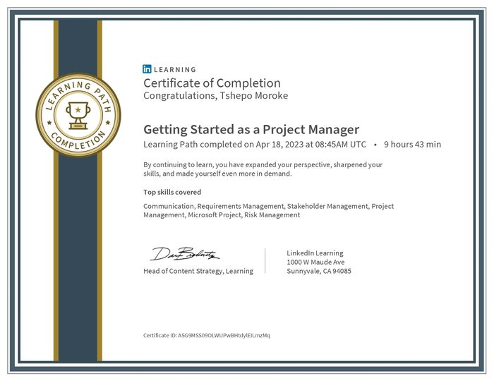
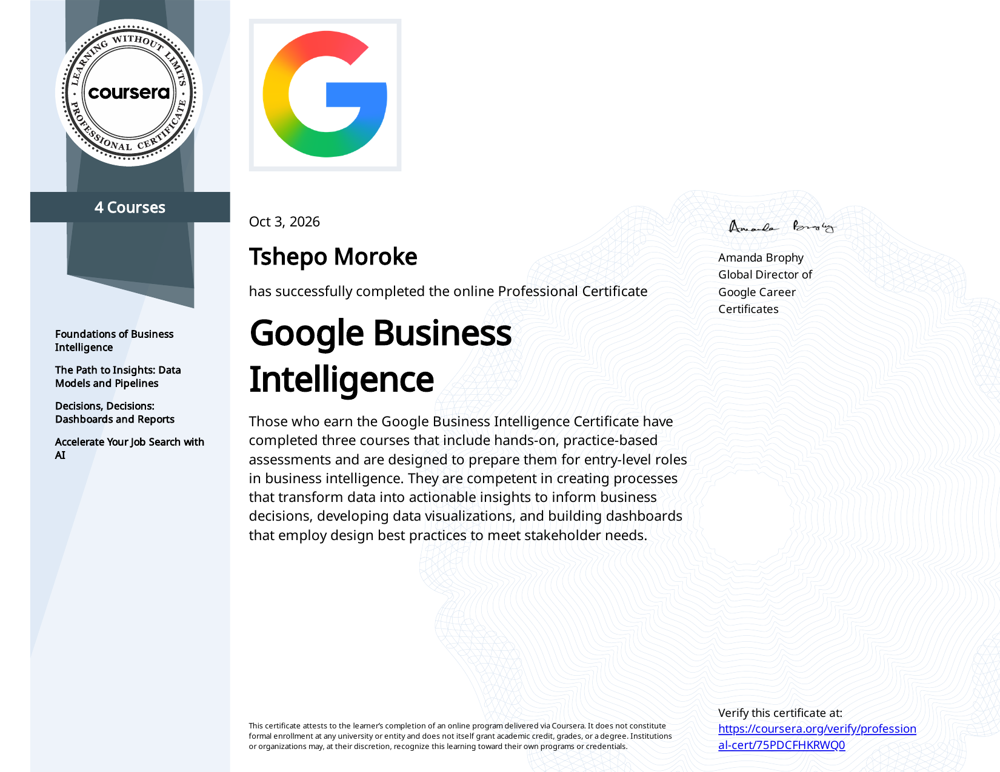
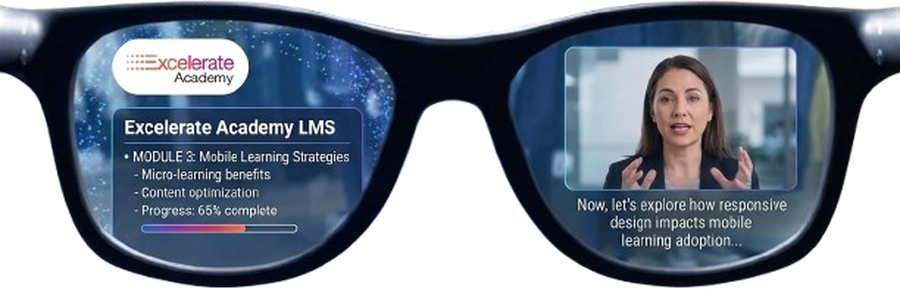
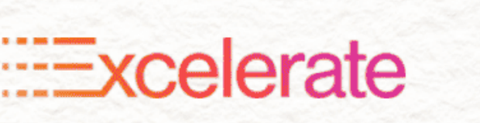
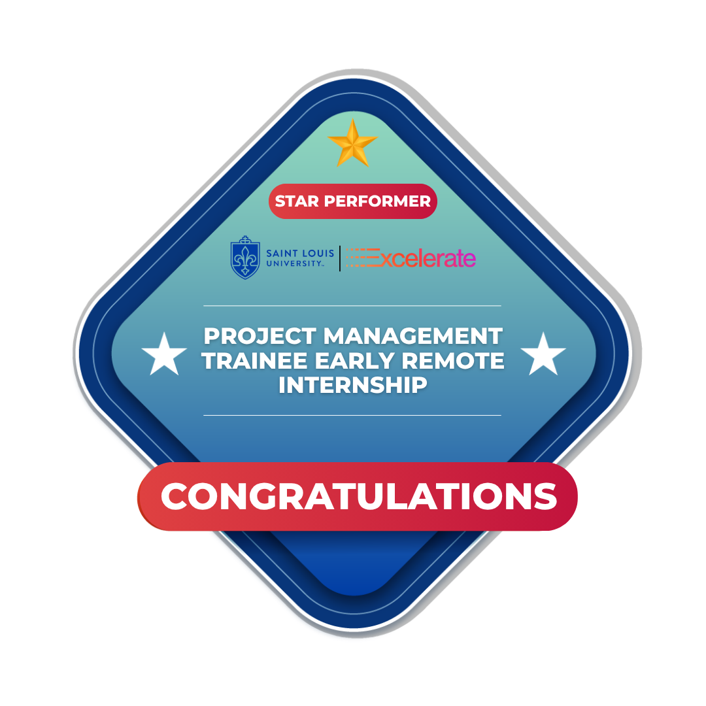
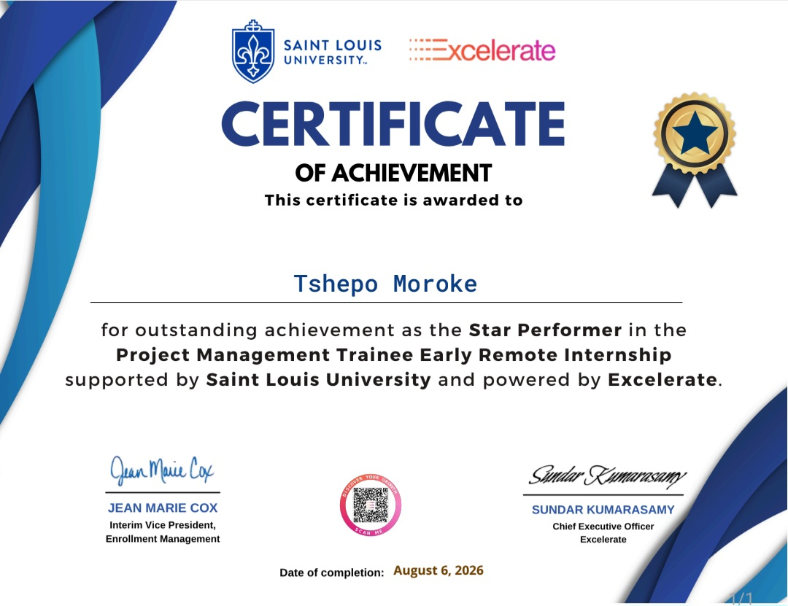
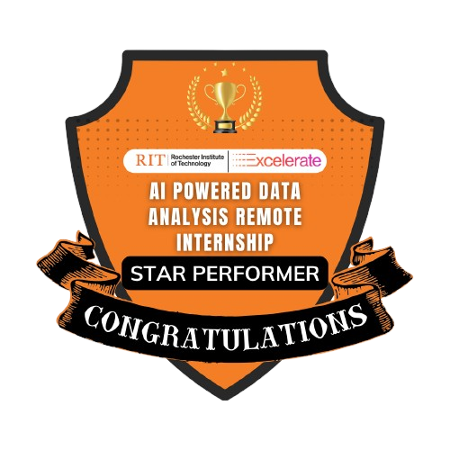
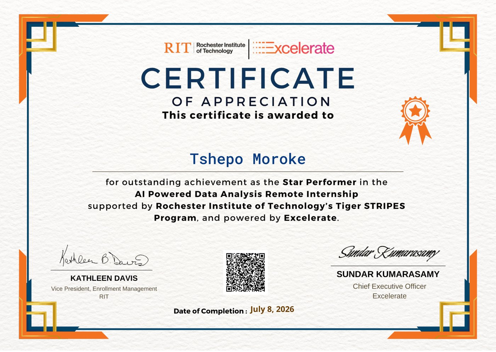
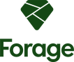
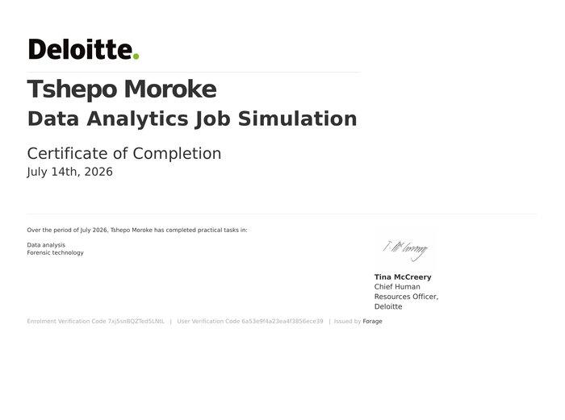

Case 01
Star Performer
Future Learning
Summit
2027
Saint Louis University
Excelerate

Star Performer Distinctions
Recognition & Milestones
Star Performer Distinction
AI Powered Data Analysis Remote Internship (RIT) & Future Learning Summit 2027, Project Management Trainee Internship
Data Analytics Job Simulation
Deloitte Australia, via Forage — Daikibo Industrials engagement
Business Management N6
Pretoria Technical College
Star Performer
2027
Saint Louis University
Excelerate
Star Performer
2026
RIT · Excelerate
Job Simulation
2026
Deloitte · Forage
Certificate
2026
Google · Coursera
Formal Qualifications
Greenwood College — 2019
Damelin College — 2022
Pretoria Technical College — 2025
Certifications & Courses
Learning Path completed 11 April 2023 · 12 hours 38 min. Skills covered: Spreadsheets, Microsoft Excel.
Learning Path completed 18 April 2023 · 9 hours 43 min. Skills covered: Communication, Requirements Management, Stakeholder Management, Project Management, Microsoft Project, Risk Management.

About Me · Tshepo ✵ Moroke
I'm Tshepo Moroke, based in Pretoria. This site documents my roadway toward becoming a Business Analyst — every project here is a real step along that path: a real dataset cleaned, a real dashboard shipped, a real stakeholder conflict worked through, not a case study read about in a textbook. Requirements documentation, process mapping, and data verification are the foundation I've been building that roadway on.
Recognition
Star Performer distinction — AI Powered Data Analysis Remote Internship, RIT & Excelerate.
Case Study 07 — Business Intelligence & Dashboards
Google Career Certificate · 4-course specialization, via Coursera.
Situation
Plenty of short courses teach a single BI tool in isolation. I wanted a structured path that covered the whole chain — framing a business question, modelling and moving the data, then building something a stakeholder could actually act on — so I enrolled in Google's four-course Business Intelligence Professional Certificate.
Approach
The Foundations course ran on a fictional company, MarkIt, where I produced a Stakeholder Requirements document, a Project Requirements document, and a BI Strategy document — translating a vague business ask into something a data team could actually build against.
The next three courses built on that foundation in sequence: modelling data and designing ETL pipelines in The Path to Insights, then applying design best practices to dashboards and stakeholder reporting in Decisions, Decisions, and finally using AI tools for job-search readiness in the capstone course.
Outcome
Foundations of Business Intelligence — 88.28%. The Path to Insights: Data Models and Pipelines — 93.75%. Decisions, Decisions: Dashboards and Reports — 97.28%. Accelerate Your Job Search with AI — 100%. The certificate was issued 3 October 2026.
Skill Demonstrated
The thread running through all four courses: a BI professional's job isn't finished when the data is clean or the dashboard is built — it's finished when a stakeholder can look at it and make a call. That's the standard I've carried into the case studies on this site.
Credential
Professional Certificate completed 3 October 2026 · 4 courses: Foundations of Business Intelligence, The Path to Insights, Decisions Decisions: Dashboards & Reports, Accelerate Your Job Search with AI.

Case Study 01 — Project Leadership
Team Lead, coordinating six teammates · , sponsored by Saint Louis University, powered by Excelerate.
The Concept
Future Learning Summit 2027 is a 10-day global virtual event where participants learn using XREAL's AI-powered smart glasses instead of handheld devices — lessons, live translation, and an AI tutor appear directly in the wearer's field of view, hands-free, so they're never looking down or losing eye contact with what's around them.
The event is hosted by Excelerate (the education platform) in partnership with XREAL (the smart-glasses technology company): Excelerate gets a flagship AI-education event, XREAL gets a real-world classroom showcase and qualified leads. To drive engagement across all 10 days, the 5 most active participants win their own pair of XREAL smart glasses.
As Team Lead, I coordinated six teammates through the full planning lifecycle as the core deliverable of the internship — this wasn't a live event, but the documentation was built to the same standard as if it were.

Planning ran across a 5-month lifecycle, July 10 – December 6, 2026, culminating in the live summit.
Approach
What I did
What I learned
What I did
What I learned
What I did
What I learned
What I did
What I learned
Outcome
Every deliverable moved from a solo or co-built draft to a reconciled, team-wide source of truth, including catching and correcting real gaps along the way — missing stakeholder ownership in Week 2, an uncertain member's capacity in Week 3, and a generic AI-look presentation in Week 4.
Skill Demonstrated
Translating a vague brief into measurable KPIs, reconciling six people's independent work into one source of truth, activity-based budgeting to the dollar, and catching a generic-looking deliverable before it shipped — the difference between knowing project management frameworks and actually running one under a real deadline.
Documentation & Supporting Materials
Objectives, scope, stakeholders, and ten traceable functional requirements.
View BRD ↗Self, peer, and manager evaluation — 93% overall performance.
View Report ↗Credential
Sponsored by Saint Louis University, powered by Excelerate — Star Performer distinction, awarded for this project.



Case Study 02 — Predictive Analysis & Data Science
Project Lead, Team 13 · , Excelerate, sponsored by Rochester Institute of Technology.
Over four weeks I led Team 13 through a full data analytics lifecycle: cleaning and understanding a raw learner-opportunity dataset, engineering features and uncovering participation trends, building and evaluating predictive models, and synthesizing everything into a program insights report and executive presentation for RIT's program managers.
The core question: which learners are likely to follow through on the opportunities — internships, courses, events, competitions, engagements — they sign up for, and what should the program actually do about it?
The Challenge
RIT's opportunity programs had no systematic way to anticipate learner drop-off. The dataset spanned 8,558 learner-opportunity records across 71 countries and 2,089 institutions — but raw and unexamined: corrupted dates, no engineered signals, and no visibility into where participation was actually breaking down.
Approach
Impact & Recommendations
The analysis gave RIT program managers a model that flags exactly which learners — particularly the roughly 50% of Internship applicants sitting in the model's medium-confidence tier — are most worth proactive outreach before they disengage.
Reflection
Leading this project end-to-end — from a raw CSV to a model in production-ready form and a report a program manager could act on — sharpened how I think about that handoff. The most useful thing I did all internship wasn't the model itself; it was insisting that every number in our final deliverables be traced back to a verified source before it reached a stakeholder.
Documentation & Supporting Materials
Self, peer, and manager evaluation — 96% overall performance.
View Report ↗Objectives, scope, stakeholders, and modelling requirements for the RIT dataset.
View BRD ↗All 31 columns documented — types, nulls, value ranges, and modelling notes.
View Data Dictionary ↗Credential
Sponsored by Rochester Institute of Technology, powered by Excelerate — Star Performer distinction, awarded for this project.


Case Study 05 — Data Analytics & Forensic Technology
Data Analyst · , Deloitte Australia, via Forage.
Brief
This simulation replicates real work from Deloitte Australia's Data Analytics team, working for a fictional manufacturing client, Daikibo Industrials. It covered two engagements: building an interactive telemetry dashboard to diagnose equipment downtime, and auditing compensation data for gender pay equity.
Task 1 — Data Analysis
Daikibo collects machine telemetry from four factories — Tokyo, Osaka, Berlin, and Shenzhen — each running nine machine types reporting status every 10 minutes. The brief: find where machines broke down most, and which machine types drove it.
I imported and unified a month of JSON telemetry data (May 2021) across all four locations, then built a calculated field — Unhealthy — converting each unhealthy status reading into 10 minutes of estimated downtime. From there I built two visualizations, Down Time per Factory and Down Time per Device Type, and combined them into a single interactive dashboard where selecting a factory dynamically filters the device-type breakdown to that location. That let me identify the highest-downtime factory and drill straight into which machine types were driving it.
Task 2 — Forensic Technology
Following internal complaints about pay inequality, Daikibo's Forensic Tech team had already scored every job role at every factory on an Equality Score (–100 to +100, 0 being ideal). My job was to classify each score into a discrimination tier so the findings could be acted on: Fair (–10 to +10), Unfair (beyond ±10 up to ±20), and Highly Discriminative (beyond ±20).
I added a fourth column, Equality Class, and classified all 37 role/factory records against that rule — cross-checking the logic against the provided worked examples (10 → Fair, –9 → Unfair, –30 → Highly Discriminative) before applying it at scale.
The pattern that emerged: scores skewed consistently negative, and the imbalance concentrated at the top of the org chart — C-Level, VP, Director, and Manager-tier roles clustered in the Unfair and Highly Discriminative bands across all four factories, while Engineer-tier and Machine Operator roles stayed mostly within the Fair band. That points the client toward senior leadership and management pay bands as the priority area for corrective action, rather than a company-wide issue.
Skill Demonstrated
Both tasks followed the same underlying discipline: take a raw, client-supplied dataset, apply a defined analytical rule consistently, and surface a conclusion a non-technical stakeholder can act on — which factory to prioritize, which management tier to investigate. That mirrors the kind of first-pass diagnostic work an analyst hands to a client engagement lead.
Credential
Deloitte Australia, via Forage — practical tasks completed in data analysis and forensic technology.


✵ Get in touch
Send me an email and I'll come back to you. The button below opens your mail app with my address already in the To field.
Open email